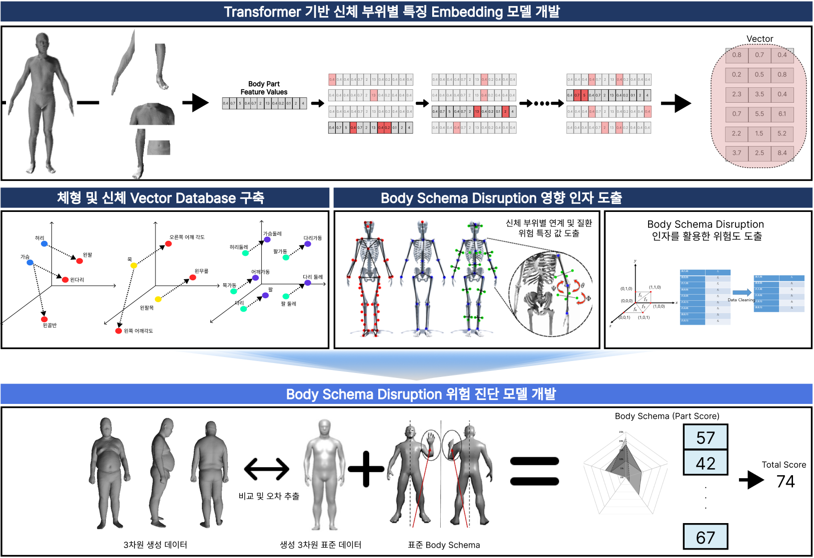
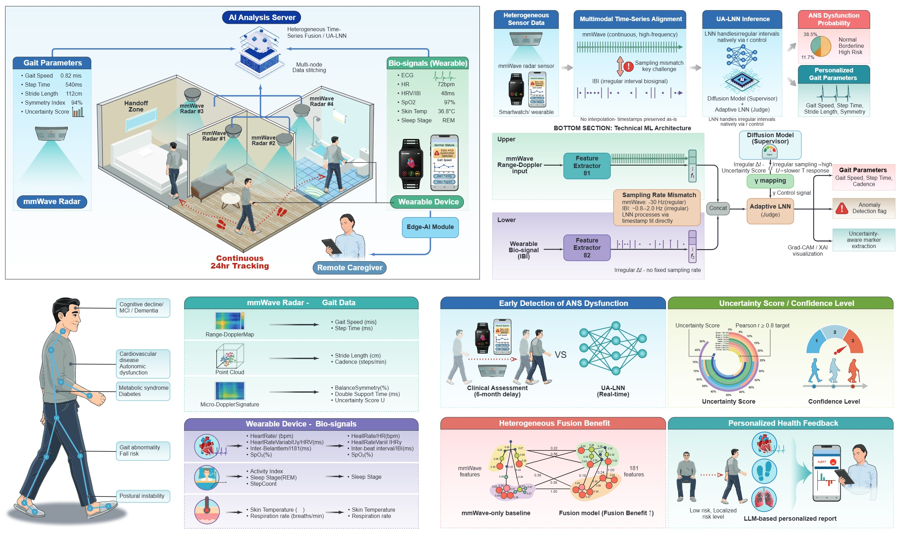
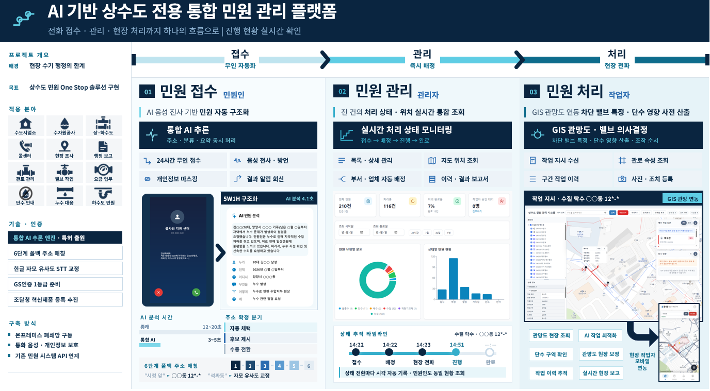
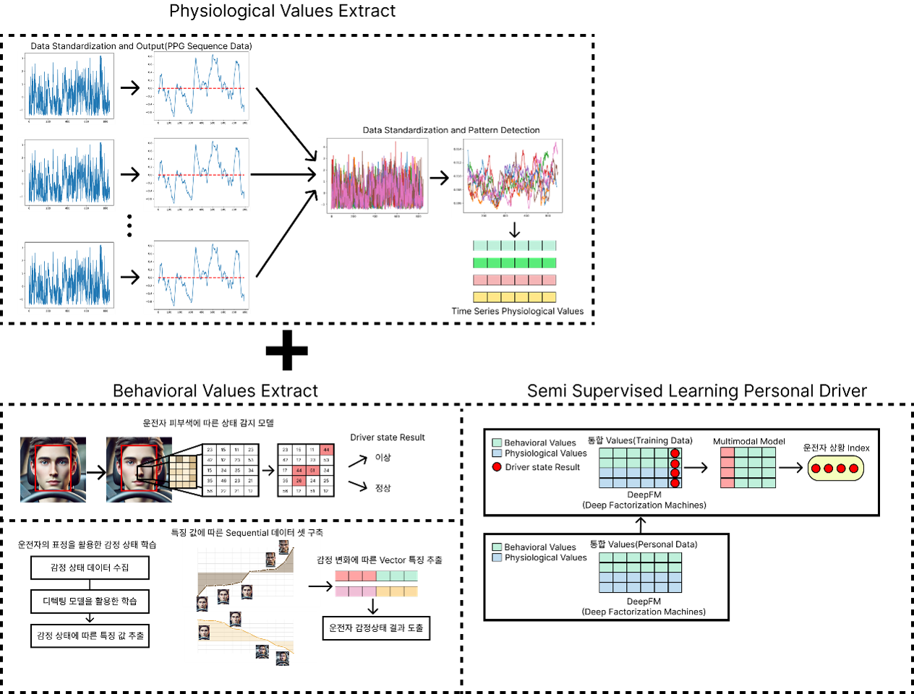

RESEARCH AREAS
멀티모달 AI 기반 디지털 헬스케어
영상, 생체신호, 행동 데이터 등 다양한 형태의 정보를 통합적으로 분석하여 인간의 건강 상태와 이상 징후를 정밀하게 파악하는 인공지능 기술을 개발합니다. 특히 2차원 이미지를 기반으로 3차원 신체 정보를 도출하고, 이를 통해 체형 변화와 신체 불균형을 분석하며, 다양한 근골격계 및 건강 관련 질환의 위험을 예측하는 헬스케어 연구를 수행합니다.
체형 및 신체 정보 분석
2차원 이미지를 활용해 3차원 신체 정보를 생성하고, 길이, 둘레, 부피, 자세 정렬 등 다양한 체형 지표를 정량적으로 분석하여 개인의 신체 특성과 변화를 평가합니다.
질환 예측 및 건강 모니터링
도출된 3차원 신체 정보와 생체·행동 데이터를 기반으로 근골격계 질환, 자세 이상, 신체 불균형 등 다양한 건강 이상 징후를 조기에 탐지하고 예측하는 지능형 헬스케어 시스템을 개발합니다

적응형 AI 기반 보행 헬스케어
복합 실내 환경에서도 신뢰도 높은 보행 분석이 가능하도록, 불확실성을 인식하고 적응적으로 반응하는 AI 기반 헬스케어 기술을 연구합니다. mmWave 레이다, Diffusion Model, Liquid Neural Network, LLM을 결합하여 고령자의 보행 이상을 조기에 감지하고 설명 가능한 건강 모니터링 서비스를 개발합니다.
보행 이상 조기 감지
비접촉 mmWave 센서를 활용하여 보행 속도, 스텝 타임 등 핵심 보행 지표를 분석하고, 고령자의 이상 징후를 조기에 탐지합니다.
설명 가능한 적응형 AI
복합 클러터 환경의 불확실성을 반영하여 모델 반응을 동적으로 조절하고, LLM 기반 자연어 피드백으로 결과를 쉽게 전달합니다.

LLM 기반 사용자 최적화 시스템
음성, 텍스트, 위치, 이력 데이터를 통합적으로 분석하여 사용자의 요청을 이해하고, 가장 적절한 처리 결과를 자동으로 제안하는 지능형 시스템을 연구합니다. STT, Embedding, Vector DB, LLM을 기반으로 비정형 입력을 정제·요약·분류하고, 맞춤형 응답과 최적의 처리 경로를 제공합니다.
사용자 요청 이해 및 맞춤형 분류
음성 및 텍스트로 입력된 비정형 사용자 요청을 자동 전사하고, 핵심 내용을 요약·정제하여 의미 기반으로 분류합니다. 이를 통해 사용자의 모호한 표현이나 반복적 설명도 정확히 해석하고, 상황에 맞는 최적의 처리 방향을 제안합니다.
지능형 추천 및 처리 최적화
Embedding과 Vector Database를 활용하여 유사 사례를 검색하고, LLM 기반 분석을 통해 담당 부서 추천, 우선순위 판단, 알림 연계, 후속 대응 방안까지 자동으로 지원합니다. 이를 통해 사용자 맞춤형 서비스 제공과 함께 업무 효율성, 응답 정확성, 처리 속도를 동시에 향상시키는 최적화 시스템을 구현합니다.

AI 기반 자율제조 및 공정 최적화
제조 공정에서 발생하는 대규모 운전 데이터와 품질 데이터를 기반으로, 공정 상태를 정밀하게 분석하고 생산 품질을 예측하는 AI 기반 자율제조 기술을 연구합니다. 특히 시멘트 제조 공정과 같이 복잡한 산업 현장에서 원료 투입량, 공정 변수, 에너지 사용량, 품질 지표를 통합적으로 학습하여, 품질 예측, 공정 최적화, 이상 대응, 프로세스 변화 적응이 가능한 지능형 제조 시스템을 개발합니다.
공정 데이터 기반 품질 예측
공정 운전 데이터로부터 주요 품질 지표를 예측하여 생산 안정성과 품질 관리 효율을 높입니다.
가변형 제조 AI 및 공정 적응
Embedding 및 Transformer 기반 모델을 활용하여 공정 변화, 신규 장비, 데이터 구조 변화에도 대응 가능한 확장형 제조 AI를 개발합니다.

AI 기반 운전자 상태 인식 및 개인화 안전지원
본 연구실은 카메라 기반 생체신호와 행동 데이터를 통합 분석하여 운전자의 상태를 이해하고, 사고 위험을 조기에 예측하는 인공지능 기술을 연구합니다. 특히 준지도학습 기반 개인화 모델을 통해 운전자별 특성을 빠르게 반영하고, 운전자 복지 중심의 지능형 안전지원 시스템을 개발합니다.
운전자 상태 인식
심박, 호흡, 산소포화도와 같은 생리 신호와 표정, 피부색, 졸음 징후 등 행동 신호를 함께 분석하여 운전자의 현재 상태를 정밀하게 파악합니다.
개인화 안전 예측
준지도학습과 멀티모달 AI를 활용하여 사용자별 운전 패턴과 위험 특성을 반영하고, 사고 가능성을 조기에 예측하는 맞춤형 안전지원 모델을 개발합니다.
